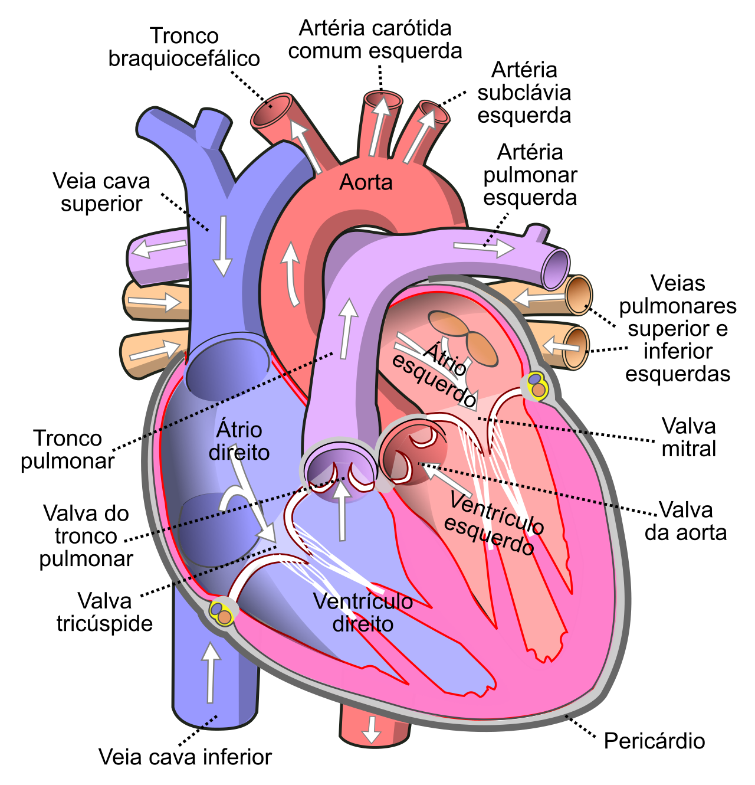
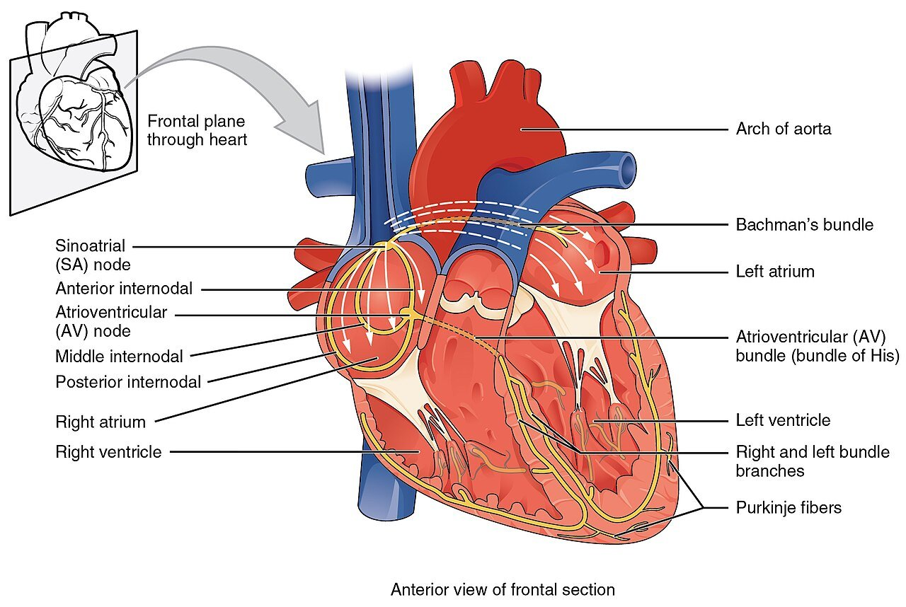

Cores da figura: azul = veias cavas e lado direito (pobre em O₂); roxo = tronco e artérias pulmonares (também pobre em O₂); laranja = veias pulmonares (rico em O₂); vermelho = aorta (rico em O₂). Setas brancas = sentido do fluxo.
Artéria não é "vaso de sangue oxigenado": é o vaso que sai do coração. As artérias pulmonares levam sangue pobre em O₂; as veias pulmonares, sangue rico em O₂.
| Valva | Entre | Impede refluxo para |
|---|---|---|
| Tricúspide | AD → VD | átrio direito |
| Pulmonar | VD → tronco pulmonar | ventrículo direito |
| Mitral | AE → VE | átrio esquerdo |
| Aórtica | VE → aorta | ventrículo esquerdo |
A mitral tem 2 cúspides, como as 2 pontas da mitra do bispo (daí o nome; também "bicúspide"). A de 3 fica à direita: tricúspide.
A parede do VE é a mais espessa: ele bombeia contra a resistência da circulação sistêmica, muito maior que a pulmonar.
Sequência de eventos de um batimento: sístole (contração) e diástole (relaxamento). Sem outro termo, referem-se aos ventrículos.
| Critério | Sístole | Diástole |
|---|---|---|
| Ventrículos | contraem e ejetam | relaxam e enchem |
| Valvas AV | fechadas | abertas |
| Semilunares | abertas | fechadas |
| Bulha no início | B1: fecham as AV | B2: fecham as semilunares |
FC = frequência cardíaca (bpm); VS = volume sistólico (mL por batimento). Em repouso, cerca de 70 × 70 mL ≈ 5 L/min.
"Tum-tá": o tum é a B1 (fim da diástole, AV fechando); o tá é a B2 (fim da sístole, semilunares fechando).

| Na figura | Português |
|---|---|
| Sinoatrial (SA) node | Nó sinoatrial: marca-passo |
| Internodal pathways | Vias internodais |
| Atrioventricular (AV) node | Nó AV: atrasa o impulso |
| Bundle of His | Feixe de His (no septo) |
| Right and left bundle branches | Ramos direito e esquerdo |
| Purkinje fibers | Fibras de Purkinje |
A tabela segue a ordem do impulso. O atraso no nó AV deixa os átrios esvaziarem antes da sístole ventricular.
As veias pulmonares transportam sangue pobre em oxigênio dos pulmões até o átrio esquerdo.
Durante a fase de ejeção ventricular, encontram-se, respectivamente, fechadas e abertas as valvas:
Um estudante afirma que a parede do ventrículo esquerdo é mais espessa que a do direito. A justificativa fisiológica correta é que o ventrículo esquerdo:
A segunda bulha cardíaca (B2) corresponde ao fechamento das valvas aórtica e pulmonar.
Na sequência normal de condução do impulso, a estrutura que o retarda, permitindo que os átrios se esvaziem antes da contração ventricular, é:
_pt.svg){kind=link}